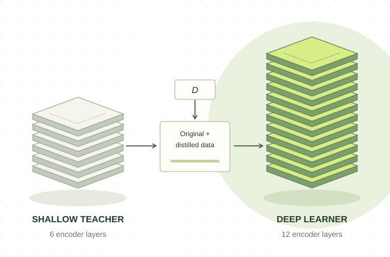

01LEARN
Train the shallow teacher.
Use the original parallel corpus D to train a shallow translation model.
Original parallel data → shallow model
Understanding and Improving Low-Resource Neural Machine Translation with Shallow Features
A simple training strategy that lets deep translation models learn from the strengths of shallow encoders.

Same depth. Better training.
Vanilla E12 → NATASHA-E12 · Table 2
low-resource translation tasks
30K–610K parallel sentence pairs
over the best vanilla models
Best configuration per task · Table 2
with CipherDAug on IWSLT14 De–En
NATASHA-E12 + augmentation · Table 3
More encoder layers do not always improve translation when parallel data is scarce. Look sentence by sentence, and a different picture emerges.
Shallow encoders often translate simple text more effectively. Their strengths are especially visible in shorter sentences and sentences with smaller word embedding norms.
Inspect the linguistic analysisof German–English test sentences
favor the 1-layer over the 6-layer encoder.
Sentence-level BLEU comparison, E1 vs. E6. This is a share of test sentences, not an overall BLEU gain.
Let a shallow model capture the simple patterns.
Then give a deeper model the benefit of both.
The knowledge travels through translated training examples. Blend those examples with the original parallel data, then train the deep model.
Use the original parallel corpus D to train a shallow translation model.
The teacher’s translations create Dshallow, carrying the patterns it has learned.
Mix original and distilled pairs. Train a deep model on this hybrid corpus.
E3 → E6orE6 → E12
Teacher → learner encoder depth; both use a 6-layer decoder.Explore every model in Table 2. NATASHA improves both 6-layer and 12-layer learners across all five translation tasks.
IWSLT14 · 160K parallel pairs
BLEU ↑ · Higher is better. The axis starts at zero.
| Model | En–Nso30K | En–Af50K | De–En160K | Tr–En190K | Ro–En610K |
|---|---|---|---|---|---|
| E1 | 22.869.2 | 30.359.1 | 34.352.2 | 16.374.4 | 33.055.3 |
| E3 | 24.168.0 | 33.954.9 | 35.151.6 | 17.672.6 | 34.054.6 |
| E6 | 24.368.8 | 34.654.4 | 35.451.1 | 18.172.1 | 34.154.8 |
| E12 | 24.367.7 | 34.055.2 | 34.751.5 | 18.071.8 | 34.354.2 |
| NATASHA-E6 | 25.965.0 | 35.952.7 | 36.449.9 | 18.770.3 | 34.453.9 |
| NATASHA-E12 | 25.465.7 | 35.552.4 | 37.049.5 | 19.470.0 | 35.353.5 |
Evaluation: case-sensitive, tokenized 4-gram BLEU using multi-bleu.perl; Translation Edit Rate (TER). En denotes an n-layer encoder.
Shallow features complement existing training methods. Combine NATASHA with CipherDAug to reach 38.2 BLEU.
| Method | BLEU |
|---|---|
| Vanilla Transformer | 35.4 |
| BERT-Fused | 36.1 |
| R-Drop | 37.3 |
| CipherDAug | 37.5 |
| NATASHA-E12 | 37.0 |
| NATASHA-E12 + R-Drop | 37.7 |
| NATASHA-E12 + CipherDAug | 38.2 |
Repeating the data or distilling from a deep model brings smaller gains. The shallow teacher is the key ingredient.
| Training variant | BLEU |
|---|---|
| Vanilla E6 | 35.4 |
| Vanilla E12 | 34.7 |
| E12 + data upsampling | 35.0 |
| E12 + self-distillation | 35.2 |
| E12 + tagging shallow data | 36.5 |
| NATASHA-E12 | 37.0 |
The training-stage analysis suggests that easier patterns are learned early. By the final model, the gains extend to low-frequency words and long sentences.
Short-sentence BLEU improves from 32.0 to 33.4. High-frequency word accuracy rises from 67.7% to 68.5%, while low-frequency words and long sentences still lag.
Low-frequency word accuracy improves from 45.3% to 47.4%. Long-sentence BLEU rises from 31.9 to 33.1. Overall test BLEU reaches 37.0.
Table 5 · NATASHA-E12 vs. vanilla E6 on IWSLT14 De–En. Low frequency: <50 occurrences; high frequency: >200. Short sentences: <30 words; long sentences: >50 words.
In low-resource machine translation, increasing encoder depth can yield limited improvements or exacerbate overfitting. This work systematically studies that behavior and identifies a useful strength of shallow models: their ability to represent simple text.
NATASHA brings that strength into deep-model training through sequence-level distillation. Across five translation tasks, the approach consistently improves on vanilla models and combines effectively with established regularization and augmentation methods.
If this work informs your research, please cite the paper.
@inproceedings{sun2025natasha,
title = {Understanding and Improving Low-Resource Neural Machine Translation with Shallow Features},
author = {Sun, Yanming and Liu, Xuebo and Wong, Derek F. and Lin, Yuchu and Li, Bei and Zhan, Runzhe and Chao, Lidia S. and Zhang, Min},
booktitle = {Natural Language Processing and Chinese Computing: NLPCC 2024, Proceedings, Part III},
series = {Lecture Notes in Computer Science},
volume = {15361},
pages = {227--239},
publisher = {Springer Nature Singapore},
year = {2025},
doi = {10.1007/978-981-97-9437-9_18},
url = {https://doi.org/10.1007/978-981-97-9437-9_18}
}NLPCC 2024 · First online: November 2024.
The print volume and this citation use 2025.